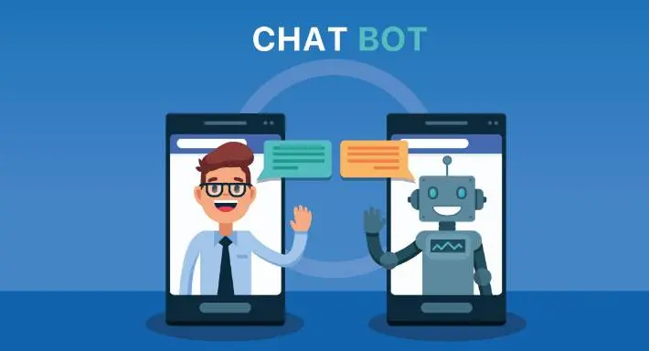

⚠️ La IA ya está reemplazando empleos (y nadie te lo está contando así)
Millones de trabajos podrían desaparecer antes de lo que crees… pero hay un detalle oculto que cambia todo.

Explora las últimas tendencias en Inteligencia Artificial y descubre cómo cambiará el mundo.
Únete y potencia tu conocimiento AI 🌐
Millones de trabajos podrían desaparecer antes de lo que crees… pero hay un detalle oculto que cambia todo.
No es ciencia ficción. Científicos lograron interpretar pensamientos… pero lo más inquietante viene después.
Algunos expertos creen que estamos cruzando una línea peligrosa… y no hay vuelta atrás.
Diagnósticos en segundos y precisión extrema. Pero existe un riesgo silencioso que pocos mencionan.

Algunos usuarios aseguran que las IA responden “demasiado humanas”… ¿hasta qué punto es seguro?

Cuando ocurre un accidente… ¿a quién decide salvar la IA? La respuesta te va a incomodar.

Obras vendidas por miles de dólares… pero hay un detalle que desata polémica.

Todo lo que haces deja huella… pero lo más inquietante es cómo se usa esa información.

Algunos expertos hablan de un punto sin retorno… y sus consecuencias son impredecibles.

Relaciones reales con inteligencias artificiales… lo que está pasando es más común de lo que imaginas.